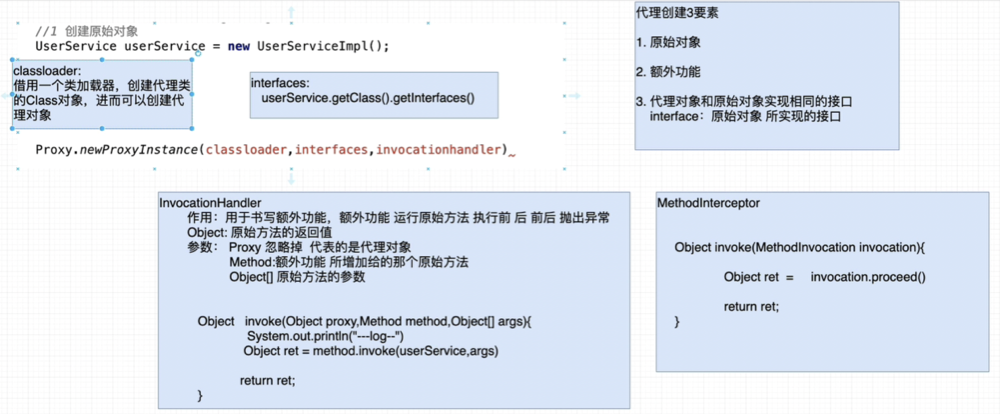
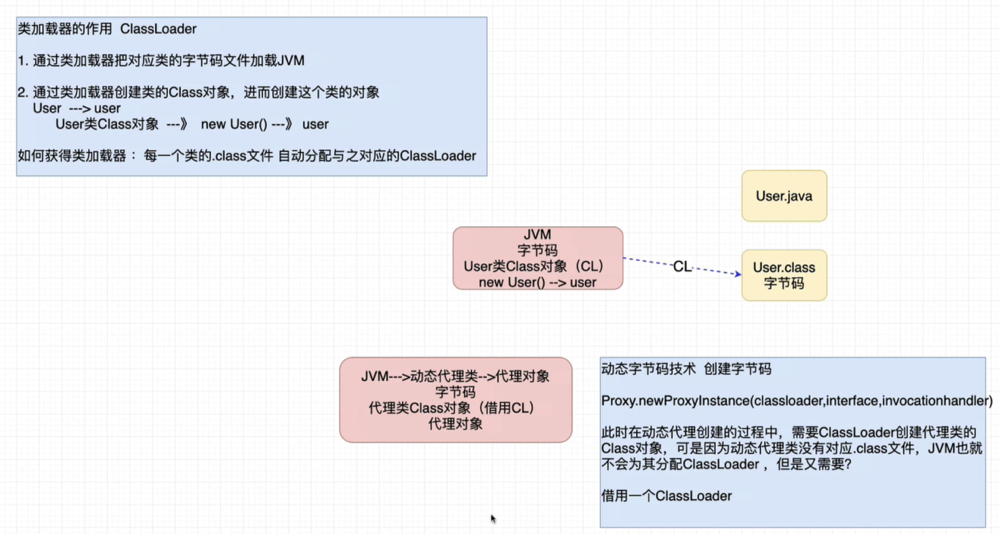
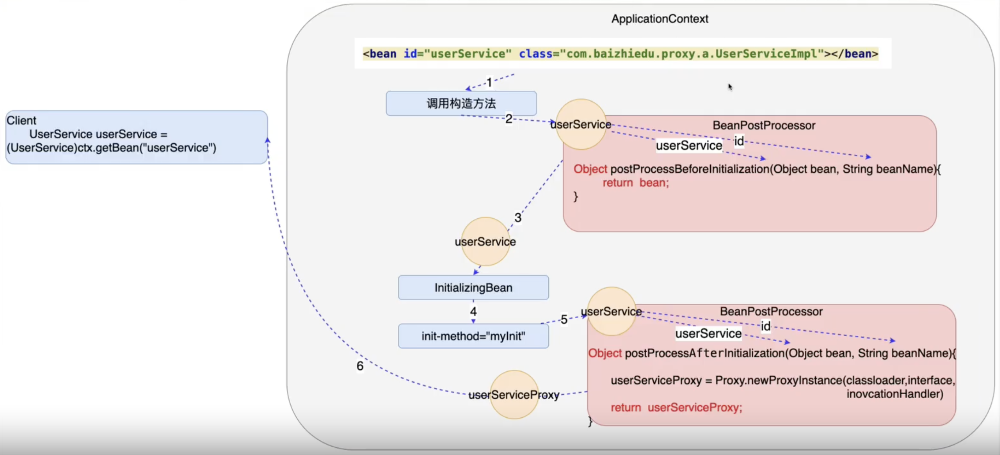

AOP编程
1. 概念
AOP(Aspect Oriented Programing) 面向切面编程
以切面为基本单位的程序开发，通过切面见的协同，相互调用完成程序的构建
面向切面编程其本质就是Spring的动态代理开发，通过代理类为原始类增加额外功能，利于原始类的维护
什么叫切面呢？
切面 = 切入点 + 额外功能
OOP(Object oriented Programing) 面向对象编程
以对象为基本单位的程序开发，通过对象间的协同，相互调用完成程序的构建
POP(Producer oriented Programing) 面向过程(方法，函数)编程
以过程为基本单位的程序开发，通过过程间的协同，相互调用完成程序的构建
2. AOP编程的开发步骤
1. 准备原始对象
2. 额外功能(需实现MethodInterceptor)
3. 切入点
4. 组装切面(额外功能+切入点)
3. AOP底层实现原理
3.1 JDk的动态代理
- Proxy.newProxyInstance方法详解


- JDK代理的创建
public class TestJDKProxy {
public static void main(String[] args) {
UserService userService = new UserServiceImpl();
InvocationHandler handler = new InvocationHandler() {
@Override
public Object invoke(Object proxy, Method method, Object[] args) throws Throwable {
System.out.println("----- before ------");
Object obj = method.invoke(userService, args);
System.out.println("----- after ------");
return obj;
}
};
UserService userServiceProxy = (UserService) Proxy.newProxyInstance(
TestJDKProxy.class.getClassLoader(),
userService.getClass().getInterfaces(),
handler
);
userServiceProxy.login("xxh", "123456");
}
}
3.2 Cglib的动态代理
public class TestCglibProxy {
public static void main(String[] args) {
UserService userService = new UserService();
Enhancer enhancer = new Enhancer();
enhancer.setClassLoader(TestCglibProxy.class.getClassLoader());
enhancer.setSuperclass(userService.getClass());
MethodInterceptor interceptor = new MethodInterceptor() {
@Override
public Object intercept(Object o, Method method, Object[] args, MethodProxy methodProxy) throws Throwable {
System.out.println("--- before ---");
Object ret = method.invoke(userService, args);
System.out.println("--- after ---");
return ret;
}
};
enhancer.setCallback(interceptor);
UserService userServiceProxy = (UserService) enhancer.create();
userServiceProxy.login("xxh", "123456");
}
}
4. 回看BeanPostProcessor
- 核心问题，为什么通过ID获取的对象实例是代理对象？

- 编码实现
public class ProxyBeanPostProcessor implements BeanPostProcessor {
@Override
public Object postProcessBeforeInitialization(Object bean, String beanName) throws BeansException {
return bean;
}
@Override
public Object postProcessAfterInitialization(Object bean, String beanName) throws BeansException {
InvocationHandler handler = new InvocationHandler() {
@Override
public Object invoke(Object proxy, Method method, Object[] args) throws Throwable {
System.out.println("---- before ----");
Object ret = method.invoke(bean, args);
System.out.println("---- after ----");
return ret;
}
};
return Proxy.newProxyInstance(ProxyBeanPostProcessor.class.getClassLoader(), bean.getClass().getInterfaces(), handler);
}
}
<bean id="userService" class="org.example.spring.postprocessor.UserServiceImpl"/>
<bean id="proxyBeanPostProcessor" class="org.example.spring.postprocessor.ProxyBeanPostProcessor"/>
5. JDK与Cglib创建方式总结
1. JDK动态代理 Proxy.newProxyInstance(classloader,interface,invocationhandler) 通过接口创建代理的实现类
2. Cglib动态代理 Enhancer.create() 通过继承父类创建代理类